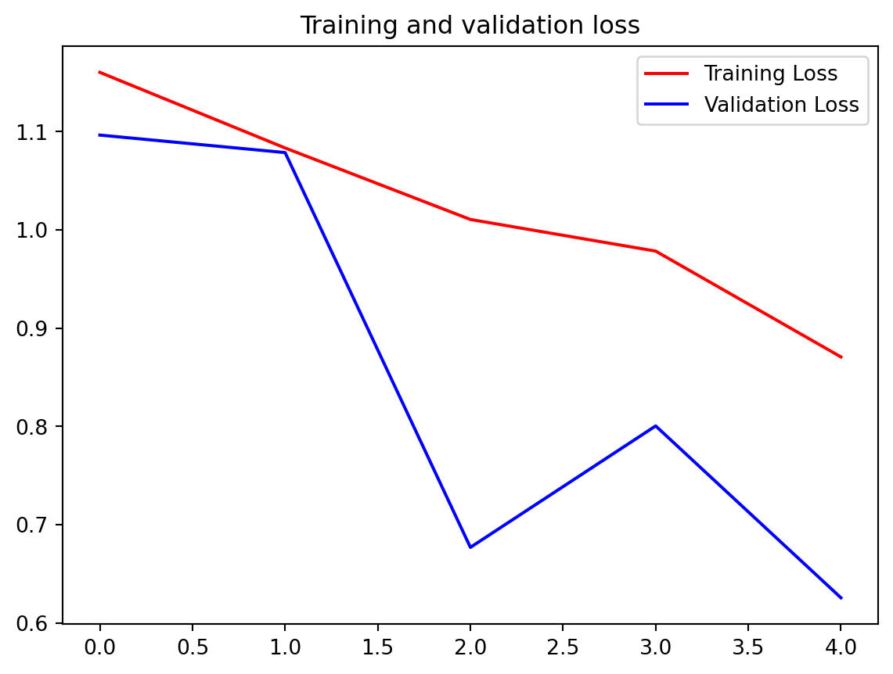

Code
import os
import zipfile
import random
import shutil
import tensorflow as tf
from tensorflow.keras.optimizers import RMSprop
from tensorflow.keras.preprocessing.image import ImageDataGenerator
from shutil import copyfile
from os import getcwdWeek4 Multiclass Classifications
You’ve come a long way, Congratulations! One more thing to do before we move off of ConvNets to the next module, and that’s to go beyond binary classification. Each of the examples you’ve done so far involved classifying one thing or another – horse or human, cat or dog. When moving beyond binary into Categorical classification there are some coding considerations you need to take into account. You’ll look at them this week!
import os
import zipfile
import random
import shutil
import tensorflow as tf
from tensorflow.keras.optimizers import RMSprop
from tensorflow.keras.preprocessing.image import ImageDataGenerator
from shutil import copyfile
from os import getcwddownload trainning data
import urllib.request
urllib.request.urlretrieve( "https://storage.googleapis.com/learning-datasets/rps.zip", "./tmp/rps.zip")download testing data
import urllib.request
urllib.request.urlretrieve( "https://storage.googleapis.com/learning-datasets/rps-test-set.zip", "./tmp/rps-test-set.zip")unzip
import os
import zipfile
local_zip = './tmp/rps.zip'
zip_ref = zipfile.ZipFile(local_zip, 'r')
zip_ref.extractall('./tmp/')
zip_ref.close()
local_zip = './tmp/rps-test-set.zip'
zip_ref = zipfile.ZipFile(local_zip, 'r')
zip_ref.extractall('./tmp/')
zip_ref.close()rock_dir = os.path.join('./tmp/rps/rock')
paper_dir = os.path.join('./tmp/rps/paper')
scissors_dir = os.path.join('./tmp/rps/scissors')
print('total training rock images:', len(os.listdir(rock_dir)))
print('total training paper images:', len(os.listdir(paper_dir)))
print('total training scissors images:', len(os.listdir(scissors_dir)))total training rock images: 840
total training paper images: 840
total training scissors images: 840rock_files = os.listdir(rock_dir)
print(rock_files[:10])
paper_files = os.listdir(paper_dir)
print(paper_files[:5])
scissors_files = os.listdir(scissors_dir)
print(scissors_files[:5])['rock04-059.png', 'rock01-108.png', 'rock04-065.png', 'rock05ck01-067.png', 'rock05ck01-073.png', 'rock04-071.png', 'rock05ck01-098.png', 'rock02-008.png', 'rock07-k03-013.png', 'rock02-034.png']
['paper03-088.png', 'paper05-026.png', 'paper05-032.png', 'paper03-077.png', 'paper03-063.png']
['testscissors03-040.png', 'testscissors03-054.png', 'testscissors03-068.png', 'testscissors03-083.png', 'testscissors03-097.png']import matplotlib.pyplot as plt
import matplotlib.image as mpimg
pic_index = 2
next_rock = [os.path.join(rock_dir, fname)
for fname in rock_files[pic_index-2:pic_index]]
next_paper = [os.path.join(paper_dir, fname)
for fname in paper_files[pic_index-2:pic_index]]
next_scissors = [os.path.join(scissors_dir, fname)
for fname in scissors_files[pic_index-2:pic_index]]
for i, img_path in enumerate(next_rock+next_paper+next_scissors):
#print(img_path)
img = mpimg.imread(img_path)
plt.imshow(img)
plt.axis('Off')
plt.show()
import tensorflow as tf
import keras_preprocessing
from keras_preprocessing import image
from keras_preprocessing.image import ImageDataGenerator
TRAINING_DIR = "./tmp/rps/"
training_datagen = ImageDataGenerator(
rescale = 1./255,
rotation_range=40,
width_shift_range=0.2,
height_shift_range=0.2,
shear_range=0.2,
zoom_range=0.2,
horizontal_flip=True,
fill_mode='nearest')VALIDATION_DIR = "./tmp/rps-test-set/"
validation_datagen = ImageDataGenerator(rescale = 1./255)
train_generator = training_datagen.flow_from_directory(
TRAINING_DIR,
target_size=(150,150),
class_mode='categorical',
batch_size=126
)
validation_generator = validation_datagen.flow_from_directory(
VALIDATION_DIR,
target_size=(150,150),
class_mode='categorical',
batch_size=126
)Found 2520 images belonging to 3 classes.
Found 372 images belonging to 3 classes.model = tf.keras.models.Sequential([
# Note the input shape is the desired size of the image 150x150 with 3 bytes color
# This is the first convolution
tf.keras.layers.Conv2D(64, (3,3), activation='relu', input_shape=(150, 150, 3)),
tf.keras.layers.MaxPooling2D(2, 2),
# The second convolution
tf.keras.layers.Conv2D(64, (3,3), activation='relu'),
tf.keras.layers.MaxPooling2D(2,2),
# The third convolution
tf.keras.layers.Conv2D(128, (3,3), activation='relu'),
tf.keras.layers.MaxPooling2D(2,2),
# The fourth convolution
tf.keras.layers.Conv2D(128, (3,3), activation='relu'),
tf.keras.layers.MaxPooling2D(2,2),
# Flatten the results to feed into a DNN
tf.keras.layers.Flatten(),
tf.keras.layers.Dropout(0.5),
# 512 neuron hidden layer
tf.keras.layers.Dense(512, activation='relu'),
tf.keras.layers.Dense(3, activation='softmax')
])model.summary()Model: "sequential"
┏━━━━━━━━━━━━━━━━━━━━━━━━━━━━━━━━━┳━━━━━━━━━━━━━━━━━━━━━━━━┳━━━━━━━━━━━━━━━┓ ┃ Layer (type) ┃ Output Shape ┃ Param # ┃ ┡━━━━━━━━━━━━━━━━━━━━━━━━━━━━━━━━━╇━━━━━━━━━━━━━━━━━━━━━━━━╇━━━━━━━━━━━━━━━┩ │ conv2d (Conv2D) │ (None, 148, 148, 64) │ 1,792 │ ├─────────────────────────────────┼────────────────────────┼───────────────┤ │ max_pooling2d (MaxPooling2D) │ (None, 74, 74, 64) │ 0 │ ├─────────────────────────────────┼────────────────────────┼───────────────┤ │ conv2d_1 (Conv2D) │ (None, 72, 72, 64) │ 36,928 │ ├─────────────────────────────────┼────────────────────────┼───────────────┤ │ max_pooling2d_1 (MaxPooling2D) │ (None, 36, 36, 64) │ 0 │ ├─────────────────────────────────┼────────────────────────┼───────────────┤ │ conv2d_2 (Conv2D) │ (None, 34, 34, 128) │ 73,856 │ ├─────────────────────────────────┼────────────────────────┼───────────────┤ │ max_pooling2d_2 (MaxPooling2D) │ (None, 17, 17, 128) │ 0 │ ├─────────────────────────────────┼────────────────────────┼───────────────┤ │ conv2d_3 (Conv2D) │ (None, 15, 15, 128) │ 147,584 │ ├─────────────────────────────────┼────────────────────────┼───────────────┤ │ max_pooling2d_3 (MaxPooling2D) │ (None, 7, 7, 128) │ 0 │ ├─────────────────────────────────┼────────────────────────┼───────────────┤ │ flatten (Flatten) │ (None, 6272) │ 0 │ ├─────────────────────────────────┼────────────────────────┼───────────────┤ │ dropout (Dropout) │ (None, 6272) │ 0 │ ├─────────────────────────────────┼────────────────────────┼───────────────┤ │ dense (Dense) │ (None, 512) │ 3,211,776 │ ├─────────────────────────────────┼────────────────────────┼───────────────┤ │ dense_1 (Dense) │ (None, 3) │ 1,539 │ └─────────────────────────────────┴────────────────────────┴───────────────┘
Total params: 3,473,475 (13.25 MB)
Trainable params: 3,473,475 (13.25 MB)
Non-trainable params: 0 (0.00 B)
model.compile(loss = 'categorical_crossentropy', optimizer='rmsprop', metrics=['accuracy'])class myCallback(tf.keras.callbacks.Callback):
def on_epoch_end(self, epoch, logs={}):
if(logs.get('accuracy')>0.95):
print("\nReached 95% accuracy so cancelling training!")
self.model.stop_training = True
# Instantiate class
callbacks = myCallback()history = model.fit(
train_generator,
#steps_per_epoch=100, # 2000 images = batch_size * steps
epochs=5,
validation_data=validation_generator,
#validation_steps=50, # 1000 images = batch_size * steps
verbose=1,
callbacks=[callbacks]
)Epoch 1/5
1/20 ━━━━━━━━━━━━━━━━━━━━ 2:19 7s/step - accuracy: 0.3968 - loss: 1.0926 2/20 ━━━━━━━━━━━━━━━━━━━━ 29s 2s/step - accuracy: 0.4008 - loss: 1.1088 3/20 ━━━━━━━━━━━━━━━━━━━━ 26s 2s/step - accuracy: 0.3933 - loss: 1.2360 4/20 ━━━━━━━━━━━━━━━━━━━━ 24s 2s/step - accuracy: 0.3917 - loss: 1.2745 5/20 ━━━━━━━━━━━━━━━━━━━━ 23s 2s/step - accuracy: 0.3854 - loss: 1.2878 6/20 ━━━━━━━━━━━━━━━━━━━━ 22s 2s/step - accuracy: 0.3805 - loss: 1.2899 7/20 ━━━━━━━━━━━━━━━━━━━━ 20s 2s/step - accuracy: 0.3768 - loss: 1.2873 8/20 ━━━━━━━━━━━━━━━━━━━━ 19s 2s/step - accuracy: 0.3735 - loss: 1.2829 9/20 ━━━━━━━━━━━━━━━━━━━━ 17s 2s/step - accuracy: 0.3710 - loss: 1.277610/20 ━━━━━━━━━━━━━━━━━━━━ 15s 2s/step - accuracy: 0.3693 - loss: 1.271911/20 ━━━━━━━━━━━━━━━━━━━━ 14s 2s/step - accuracy: 0.3679 - loss: 1.266312/20 ━━━━━━━━━━━━━━━━━━━━ 12s 2s/step - accuracy: 0.3669 - loss: 1.260713/20 ━━━━━━━━━━━━━━━━━━━━ 11s 2s/step - accuracy: 0.3656 - loss: 1.255514/20 ━━━━━━━━━━━━━━━━━━━━ 9s 2s/step - accuracy: 0.3648 - loss: 1.2504 15/20 ━━━━━━━━━━━━━━━━━━━━ 7s 2s/step - accuracy: 0.3639 - loss: 1.245716/20 ━━━━━━━━━━━━━━━━━━━━ 6s 2s/step - accuracy: 0.3630 - loss: 1.241217/20 ━━━━━━━━━━━━━━━━━━━━ 4s 2s/step - accuracy: 0.3624 - loss: 1.237018/20 ━━━━━━━━━━━━━━━━━━━━ 3s 2s/step - accuracy: 0.3622 - loss: 1.233019/20 ━━━━━━━━━━━━━━━━━━━━ 1s 2s/step - accuracy: 0.3621 - loss: 1.229320/20 ━━━━━━━━━━━━━━━━━━━━ 0s 2s/step - accuracy: 0.3620 - loss: 1.225820/20 ━━━━━━━━━━━━━━━━━━━━ 40s 2s/step - accuracy: 0.3618 - loss: 1.2227 - val_accuracy: 0.3575 - val_loss: 1.0964
Epoch 2/5
1/20 ━━━━━━━━━━━━━━━━━━━━ 2:02 6s/step - accuracy: 0.3016 - loss: 1.1021 2/20 ━━━━━━━━━━━━━━━━━━━━ 27s 2s/step - accuracy: 0.2937 - loss: 1.1018 3/20 ━━━━━━━━━━━━━━━━━━━━ 26s 2s/step - accuracy: 0.3025 - loss: 1.1013 4/20 ━━━━━━━━━━━━━━━━━━━━ 24s 2s/step - accuracy: 0.3137 - loss: 1.1005 5/20 ━━━━━━━━━━━━━━━━━━━━ 23s 2s/step - accuracy: 0.3239 - loss: 1.0996 6/20 ━━━━━━━━━━━━━━━━━━━━ 22s 2s/step - accuracy: 0.3321 - loss: 1.0989 7/20 ━━━━━━━━━━━━━━━━━━━━ 21s 2s/step - accuracy: 0.3384 - loss: 1.0981 8/20 ━━━━━━━━━━━━━━━━━━━━ 19s 2s/step - accuracy: 0.3462 - loss: 1.0969 9/20 ━━━━━━━━━━━━━━━━━━━━ 18s 2s/step - accuracy: 0.3520 - loss: 1.096410/20 ━━━━━━━━━━━━━━━━━━━━ 16s 2s/step - accuracy: 0.3562 - loss: 1.096111/20 ━━━━━━━━━━━━━━━━━━━━ 15s 2s/step - accuracy: 0.3598 - loss: 1.095812/20 ━━━━━━━━━━━━━━━━━━━━ 13s 2s/step - accuracy: 0.3636 - loss: 1.095513/20 ━━━━━━━━━━━━━━━━━━━━ 12s 2s/step - accuracy: 0.3662 - loss: 1.095214/20 ━━━━━━━━━━━━━━━━━━━━ 10s 2s/step - accuracy: 0.3686 - loss: 1.094815/20 ━━━━━━━━━━━━━━━━━━━━ 8s 2s/step - accuracy: 0.3704 - loss: 1.0944 16/20 ━━━━━━━━━━━━━━━━━━━━ 6s 2s/step - accuracy: 0.3722 - loss: 1.093917/20 ━━━━━━━━━━━━━━━━━━━━ 5s 2s/step - accuracy: 0.3742 - loss: 1.093318/20 ━━━━━━━━━━━━━━━━━━━━ 3s 2s/step - accuracy: 0.3763 - loss: 1.092519/20 ━━━━━━━━━━━━━━━━━━━━ 1s 2s/step - accuracy: 0.3783 - loss: 1.091820/20 ━━━━━━━━━━━━━━━━━━━━ 0s 2s/step - accuracy: 0.3800 - loss: 1.091420/20 ━━━━━━━━━━━━━━━━━━━━ 40s 2s/step - accuracy: 0.3816 - loss: 1.0910 - val_accuracy: 0.4167 - val_loss: 1.0786
Epoch 3/5
1/20 ━━━━━━━━━━━━━━━━━━━━ 2:08 7s/step - accuracy: 0.5079 - loss: 1.0719 2/20 ━━━━━━━━━━━━━━━━━━━━ 30s 2s/step - accuracy: 0.4980 - loss: 1.0669 3/20 ━━━━━━━━━━━━━━━━━━━━ 27s 2s/step - accuracy: 0.4934 - loss: 1.0607 4/20 ━━━━━━━━━━━━━━━━━━━━ 25s 2s/step - accuracy: 0.4836 - loss: 1.0585 5/20 ━━━━━━━━━━━━━━━━━━━━ 24s 2s/step - accuracy: 0.4736 - loss: 1.0583 6/20 ━━━━━━━━━━━━━━━━━━━━ 23s 2s/step - accuracy: 0.4683 - loss: 1.0566 7/20 ━━━━━━━━━━━━━━━━━━━━ 22s 2s/step - accuracy: 0.4642 - loss: 1.0546 8/20 ━━━━━━━━━━━━━━━━━━━━ 20s 2s/step - accuracy: 0.4622 - loss: 1.0526 9/20 ━━━━━━━━━━━━━━━━━━━━ 18s 2s/step - accuracy: 0.4615 - loss: 1.049910/20 ━━━━━━━━━━━━━━━━━━━━ 16s 2s/step - accuracy: 0.4621 - loss: 1.046811/20 ━━━━━━━━━━━━━━━━━━━━ 15s 2s/step - accuracy: 0.4629 - loss: 1.043812/20 ━━━━━━━━━━━━━━━━━━━━ 13s 2s/step - accuracy: 0.4637 - loss: 1.041813/20 ━━━━━━━━━━━━━━━━━━━━ 11s 2s/step - accuracy: 0.4641 - loss: 1.040314/20 ━━━━━━━━━━━━━━━━━━━━ 9s 2s/step - accuracy: 0.4642 - loss: 1.0391 15/20 ━━━━━━━━━━━━━━━━━━━━ 8s 2s/step - accuracy: 0.4638 - loss: 1.038216/20 ━━━━━━━━━━━━━━━━━━━━ 6s 2s/step - accuracy: 0.4638 - loss: 1.037117/20 ━━━━━━━━━━━━━━━━━━━━ 4s 2s/step - accuracy: 0.4641 - loss: 1.035918/20 ━━━━━━━━━━━━━━━━━━━━ 3s 2s/step - accuracy: 0.4645 - loss: 1.034519/20 ━━━━━━━━━━━━━━━━━━━━ 1s 2s/step - accuracy: 0.4650 - loss: 1.033120/20 ━━━━━━━━━━━━━━━━━━━━ 0s 2s/step - accuracy: 0.4651 - loss: 1.032020/20 ━━━━━━━━━━━━━━━━━━━━ 39s 2s/step - accuracy: 0.4652 - loss: 1.0310 - val_accuracy: 0.7984 - val_loss: 0.6768
Epoch 4/5
1/20 ━━━━━━━━━━━━━━━━━━━━ 2:03 7s/step - accuracy: 0.6429 - loss: 0.9015 2/20 ━━━━━━━━━━━━━━━━━━━━ 28s 2s/step - accuracy: 0.5913 - loss: 0.9494 3/20 ━━━━━━━━━━━━━━━━━━━━ 26s 2s/step - accuracy: 0.5529 - loss: 0.9755 4/20 ━━━━━━━━━━━━━━━━━━━━ 25s 2s/step - accuracy: 0.5382 - loss: 0.9908 5/20 ━━━━━━━━━━━━━━━━━━━━ 23s 2s/step - accuracy: 0.5309 - loss: 0.9979 6/20 ━━━━━━━━━━━━━━━━━━━━ 22s 2s/step - accuracy: 0.5290 - loss: 0.9983 7/20 ━━━━━━━━━━━━━━━━━━━━ 20s 2s/step - accuracy: 0.5286 - loss: 0.9969 8/20 ━━━━━━━━━━━━━━━━━━━━ 19s 2s/step - accuracy: 0.5263 - loss: 1.0012 9/20 ━━━━━━━━━━━━━━━━━━━━ 17s 2s/step - accuracy: 0.5211 - loss: 1.006010/20 ━━━━━━━━━━━━━━━━━━━━ 16s 2s/step - accuracy: 0.5168 - loss: 1.009911/20 ━━━━━━━━━━━━━━━━━━━━ 14s 2s/step - accuracy: 0.5136 - loss: 1.012612/20 ━━━━━━━━━━━━━━━━━━━━ 13s 2s/step - accuracy: 0.5118 - loss: 1.013913/20 ━━━━━━━━━━━━━━━━━━━━ 11s 2s/step - accuracy: 0.5106 - loss: 1.014514/20 ━━━━━━━━━━━━━━━━━━━━ 9s 2s/step - accuracy: 0.5098 - loss: 1.0149 15/20 ━━━━━━━━━━━━━━━━━━━━ 8s 2s/step - accuracy: 0.5095 - loss: 1.014616/20 ━━━━━━━━━━━━━━━━━━━━ 6s 2s/step - accuracy: 0.5092 - loss: 1.014217/20 ━━━━━━━━━━━━━━━━━━━━ 4s 2s/step - accuracy: 0.5090 - loss: 1.013218/20 ━━━━━━━━━━━━━━━━━━━━ 3s 2s/step - accuracy: 0.5091 - loss: 1.011919/20 ━━━━━━━━━━━━━━━━━━━━ 1s 2s/step - accuracy: 0.5091 - loss: 1.010620/20 ━━━━━━━━━━━━━━━━━━━━ 0s 2s/step - accuracy: 0.5094 - loss: 1.009020/20 ━━━━━━━━━━━━━━━━━━━━ 39s 2s/step - accuracy: 0.5097 - loss: 1.0076 - val_accuracy: 0.6586 - val_loss: 0.8004
Epoch 5/5
1/20 ━━━━━━━━━━━━━━━━━━━━ 2:08 7s/step - accuracy: 0.4841 - loss: 1.0897 2/20 ━━━━━━━━━━━━━━━━━━━━ 33s 2s/step - accuracy: 0.4583 - loss: 1.0807 3/20 ━━━━━━━━━━━━━━━━━━━━ 29s 2s/step - accuracy: 0.4625 - loss: 1.0633 4/20 ━━━━━━━━━━━━━━━━━━━━ 27s 2s/step - accuracy: 0.4669 - loss: 1.0455 5/20 ━━━━━━━━━━━━━━━━━━━━ 26s 2s/step - accuracy: 0.4745 - loss: 1.0306 6/20 ━━━━━━━━━━━━━━━━━━━━ 25s 2s/step - accuracy: 0.4829 - loss: 1.0173 7/20 ━━━━━━━━━━━━━━━━━━━━ 23s 2s/step - accuracy: 0.4906 - loss: 1.0040 8/20 ━━━━━━━━━━━━━━━━━━━━ 21s 2s/step - accuracy: 0.4968 - loss: 0.9926 9/20 ━━━━━━━━━━━━━━━━━━━━ 19s 2s/step - accuracy: 0.5032 - loss: 0.982110/20 ━━━━━━━━━━━━━━━━━━━━ 17s 2s/step - accuracy: 0.5090 - loss: 0.973111/20 ━━━━━━━━━━━━━━━━━━━━ 15s 2s/step - accuracy: 0.5144 - loss: 0.965712/20 ━━━━━━━━━━━━━━━━━━━━ 13s 2s/step - accuracy: 0.5201 - loss: 0.959113/20 ━━━━━━━━━━━━━━━━━━━━ 12s 2s/step - accuracy: 0.5246 - loss: 0.953614/20 ━━━━━━━━━━━━━━━━━━━━ 10s 2s/step - accuracy: 0.5274 - loss: 0.951215/20 ━━━━━━━━━━━━━━━━━━━━ 8s 2s/step - accuracy: 0.5305 - loss: 0.9486 16/20 ━━━━━━━━━━━━━━━━━━━━ 6s 2s/step - accuracy: 0.5338 - loss: 0.945717/20 ━━━━━━━━━━━━━━━━━━━━ 5s 2s/step - accuracy: 0.5371 - loss: 0.942618/20 ━━━━━━━━━━━━━━━━━━━━ 3s 2s/step - accuracy: 0.5401 - loss: 0.939219/20 ━━━━━━━━━━━━━━━━━━━━ 1s 2s/step - accuracy: 0.5429 - loss: 0.935720/20 ━━━━━━━━━━━━━━━━━━━━ 0s 2s/step - accuracy: 0.5456 - loss: 0.932520/20 ━━━━━━━━━━━━━━━━━━━━ 40s 2s/step - accuracy: 0.5479 - loss: 0.9295 - val_accuracy: 0.8011 - val_loss: 0.6255acc = history.history['accuracy']
val_acc = history.history['val_accuracy']
loss = history.history['loss']
val_loss = history.history['val_loss']
epochs = range(len(acc))import matplotlib.image as mpimg
import matplotlib.pyplot as plt
#------------------------------------------------
# Plot training and validation accuracy per epoch
#------------------------------------------------
plt.plot(epochs, acc, 'r', label='Training accuracy')
plt.plot(epochs, val_acc, 'b', label='Validation accuracy')
plt.title('Training and validation accuracy')
plt.figure()
plt.plot(epochs, loss, 'r', label='Training Loss')
plt.plot(epochs, val_loss, 'b', label='Validation Loss')
plt.title('Training and validation loss')
plt.legend()
plt.show()

# Save the entire model as a `.keras` zip archive.
model.save('c2week4_rock_paper_scissors.keras')new_model = tf.keras.models.load_model('c2week4_rock_paper_scissors.keras')new_model.summary()Model: "sequential"
┏━━━━━━━━━━━━━━━━━━━━━━━━━━━━━━━━━┳━━━━━━━━━━━━━━━━━━━━━━━━┳━━━━━━━━━━━━━━━┓ ┃ Layer (type) ┃ Output Shape ┃ Param # ┃ ┡━━━━━━━━━━━━━━━━━━━━━━━━━━━━━━━━━╇━━━━━━━━━━━━━━━━━━━━━━━━╇━━━━━━━━━━━━━━━┩ │ conv2d (Conv2D) │ (None, 148, 148, 64) │ 1,792 │ ├─────────────────────────────────┼────────────────────────┼───────────────┤ │ max_pooling2d (MaxPooling2D) │ (None, 74, 74, 64) │ 0 │ ├─────────────────────────────────┼────────────────────────┼───────────────┤ │ conv2d_1 (Conv2D) │ (None, 72, 72, 64) │ 36,928 │ ├─────────────────────────────────┼────────────────────────┼───────────────┤ │ max_pooling2d_1 (MaxPooling2D) │ (None, 36, 36, 64) │ 0 │ ├─────────────────────────────────┼────────────────────────┼───────────────┤ │ conv2d_2 (Conv2D) │ (None, 34, 34, 128) │ 73,856 │ ├─────────────────────────────────┼────────────────────────┼───────────────┤ │ max_pooling2d_2 (MaxPooling2D) │ (None, 17, 17, 128) │ 0 │ ├─────────────────────────────────┼────────────────────────┼───────────────┤ │ conv2d_3 (Conv2D) │ (None, 15, 15, 128) │ 147,584 │ ├─────────────────────────────────┼────────────────────────┼───────────────┤ │ max_pooling2d_3 (MaxPooling2D) │ (None, 7, 7, 128) │ 0 │ ├─────────────────────────────────┼────────────────────────┼───────────────┤ │ flatten (Flatten) │ (None, 6272) │ 0 │ ├─────────────────────────────────┼────────────────────────┼───────────────┤ │ dropout (Dropout) │ (None, 6272) │ 0 │ ├─────────────────────────────────┼────────────────────────┼───────────────┤ │ dense (Dense) │ (None, 512) │ 3,211,776 │ ├─────────────────────────────────┼────────────────────────┼───────────────┤ │ dense_1 (Dense) │ (None, 3) │ 1,539 │ └─────────────────────────────────┴────────────────────────┴───────────────┘
Total params: 6,946,952 (26.50 MB)
Trainable params: 3,473,475 (13.25 MB)
Non-trainable params: 0 (0.00 B)
Optimizer params: 3,473,477 (13.25 MB)
https://coursera.org/learn/convolutional-neural-networks-tensorflow/home/
https://github.com/https-deeplearning-ai/tensorflow-1-public/tree/main/C2
https://www.kaggle.com/c/dogs-vs-cats